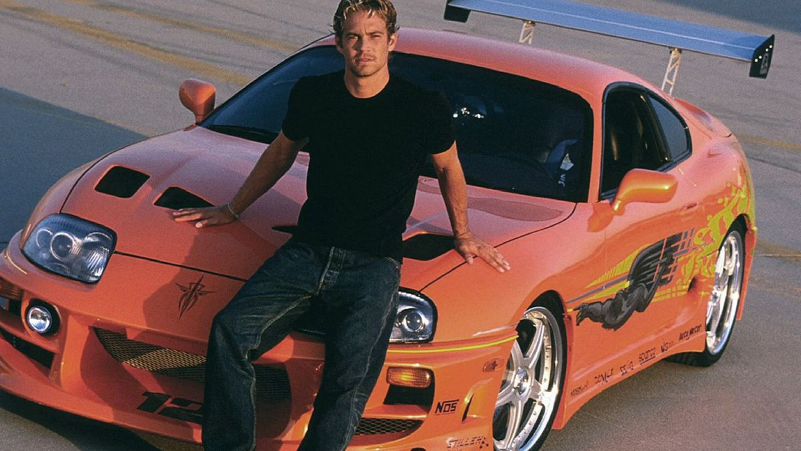
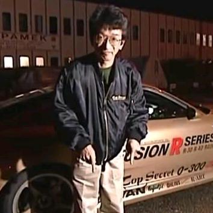
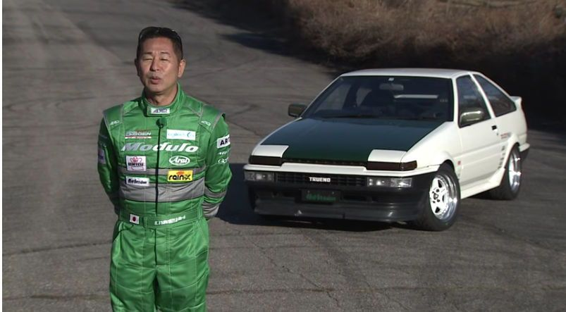
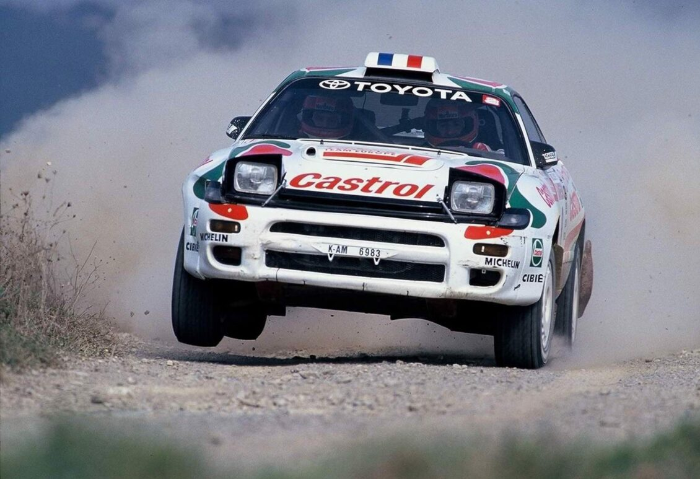
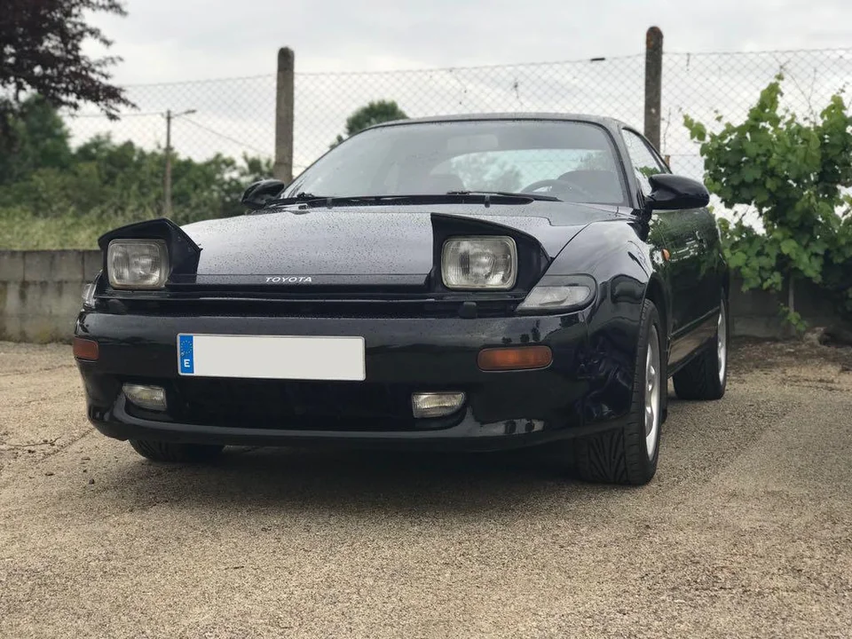

En esta página se mostrarán los coches más famosos de toyota que andaban
por las calles en los años 90.
El A80 es sin duda el más famoso de todos los Supra y no es para menos,
pues ofrecía unas prestaciones muy elevadas incluso en términos actuales,
sobre todo, gracias al desarrollo de un nuevo motor de seis cilindros en línea: el 2JZ.
Disponible en versiones atmosféricas 2JZ-GE y biturbo 2JZ-GTE dos turbos, llegaba
a producir hasta una potencia de 330 CV a las 5600 rpm, con su tracción trasera.

Este coche debe también gran parte de su fama a la película Fast And Furious , conducido por
el actor Paul Walker, con el mítico vinilado de la película.

También destacaba por su gran capacidad para tuneo, pudiendo llegar hasta cerca de los 1000CV, El japonés
Smokey Nagata, con su proyecto Top Secret tuneó un Toyota supra, que alcanzó los 300km/h con facilidad
Vídeo
de Smokey en Reino Unido, alcanzando más de 300km/h

La generación Toyota AE86 del Toyota Corolla Levin y Toyota Sprinter Trueno,
es un pequeño cupé ligero o hatchback introducido por Toyota en 1983. También es conocido como "Hachi-Roku
(ハチロク?)", por 8 y 6 en japonés) gracias al Manga / Anime Initial D, conducido por su protagonista Fujiwara Takumi . El código
del chasis "AE86" muestra el modelo de tracción trasera de 1600 cc de la gama. Venía con un gran
motor de 4 cilindros en linea atmosférico, con una potencia de unos 90CV a 110CV el modelo más potente.
Este coche no destacaba por su potencia o su rendimiento deportivo, pero su bajo precio,
su bajo peso 940 kg y su tracción trasera, era el coche perfecto para hacer drift.
Keiichi Tsuchiya, el conocido "Drift King" (Dios del drift) conducía un AE86.
Pincha aquí
para ver un video del gran Keiichi Tsuchiya

Sexta generación de la gama celica con tracción a las 4 ruedas y un motor 4 en línea turbo de 242 CV.
Este coche es famoso por su aparición en Rally de San Remo, a manos del español Carlos Sainz, quien consiguió la victoria.
No muchos años más tarde, el Toyota Celica fue descalificado de los Rallyes, por un sofisticado método
para pasar de la potencia límite establecida.
Este vídeo
explica muy bien el método que usaron los ingenieros para ganar más potencia, pasando desapercibido
ante los técnicos.

Esta generación del Celica disponía también de una versión mas asequible para la calle, con tracción delantera
y un motor atmosférico más humilde
